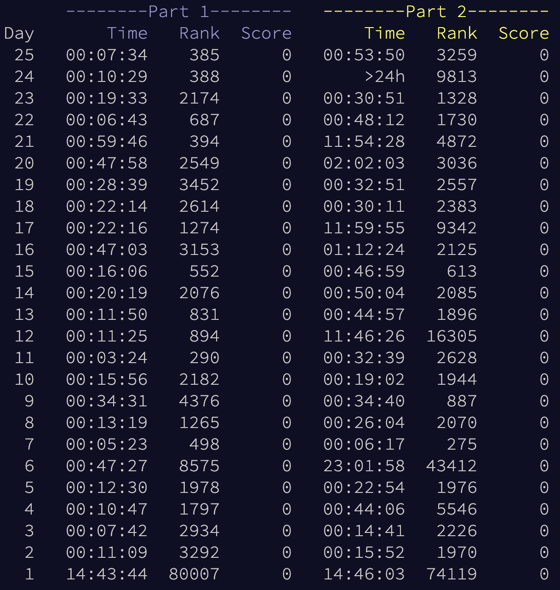

Takeaways from Advent of Code 2024
Introduction
[please ignore how late this is]
This (last? 2024’s) winter, I completed the Advent of Code (AoC) 2024 puzzles every night from December 1 through December 25. It was a bit easier for me than for the poor chaps on the East Coast as the puzzles were released at 9:00 pm PT (midnight Eastern time) and I could often have them solved and go to sleep by 10:00 pm. Anyways, here are a few scattered thoughts on what I learned and gained.
This was my first year doing AoC, I only discovered it because of a group of AoC competitors at OHS.
My setup
- All of my original solutions are in Python. I used the
advent-of-code-datapackage with a custom runner script to get puzzle input. The runner script basically continuously reran my program with a 5s wait in between in each run. It usedexecto run my solution so it could declare the puzzle input as a variable and then let my solution access it – this, of course, ended up not being the best option chiefly because of naming conflicts between the runner script and solutions, but it worked. - I used the Zed editor for my solutions, as I have for all of my coding projects for the past year or so. (Sorry VSCode, but I know an Electron app when I see it – Zed is unimaginably fast)
- For the first few days, I used Supermaven code completion because I had it enabled by default and it definitely sped up the process, but stopped after realizing it violated the AoC rules.
- I used a utilities file, which basically just stored useful functions and data structures. This ended up being a godsend despite me having to rewrite it about 2-3 times. This included vector2 and grid classes, a myriad group of list-related utilities, tools for parsing inputs, and many other random things. The most useful utilities by a long shot were the vector and grid classes – see this meme to understand. The vast majority of my solutions actually no longer work 😂 because of how often I changed my utilities file. Updating them wouldn’t be too hard but I’m too lazy to do so.
Stuff I learned
I learned so much stuff through doing AoC. Here are the highlights:
Python-specific
- How to properly structure a Python project. I haven’t done many large Python things in a while, so this was a bit of a refresher.
- Regex! Believe it or not I had near zero experience with regex before AoC, so learning it through a handful of tutorials and getting practice with the
relibrary in Python was nice. - At the time I didn’t understand Dijkstra’s algorithm or A* (and would be too lazy to implement them even if I did know them) so I gained a lot of experience using the
networkxlibrary. - The Python STD libraries like
itertools,functools,copy, andcollections.
More generally
- Problem-solving skills. After (or during) solving a day’s puzzle, us OHSers would often trade optimizations and ideas for solutions, which not only helped me solve the tasks but also taught me algorithmic thinking yada yada.
- Thinking about a 2D grid and vectors/vector transformaions - believe me, it becomes much easier to visualize a grid after solving 20 AoC problems about them.
- Patiently waiting for code to finish executing.
- General algorithms – probably the coolest I learned was dynamic programming (to solve Day 19).
- A bunch of other things that I’m not willing to explain.
Standout puzzles
- My initial solution for Day 6 part 2 didn’t work; I still don’t know why. I submitted the wrong answer something like 5 times in a row. I eventually (23 hours later, one hour before the next puzzle) buckled down and rewrote it.
- All of Day 8 was honestly a pain for me, especially since I didn’t have good grid or vector utilities then. I would keep on messing up my pluses or minuses or doing a similar silly mistake. It took me a while to do it, despite the problem itself being relatively simple.
- In Day 9, it took me a while to realize that numbers could be longer than 1 digit 😭.
- I spent hours pondering Day 13, even rewatching a linear algebra series, before realizing that it was a simple linear equation…
- Day 20 was an absolute mess, took an hour just for me to understand the problem. Even just using the optimized networkx implementation of Dijkstra’s wasn’t enough and I had to use a lot of optimizations for part 2.
- There were around three puzzles that I had to take a hint from the subreddit from, and Day 21 Part 2 was probably the toughest of them. I spent a lot of time figuring out how to create a recursive memoized function for it.
- Many puzzles in Advent of Code were challenging, but Day 24 Part 2 was the holy grail of AoC problems for me. It took me ages to just find my bearings; I ended up using a hybrid approach using a program to detect errors, manually fixing and noting them, and continuing until it worked. I actually solved Day 24 Part 2 after solving Day 25 Part 1, as I needed to have solved every other problem in order to complete Day 25 Part 2
Rust!
AoC was a great way to spent my December (perhaps not the best way to spend my finals week) but I quickly got bored as winter break set in and AoC finished. In order to not die of said boredom I decided to learn Rust - a language that I’ve been wanting to learn for a while (because it looks like Swift, which I love, but is actually cross-platform) but seemed daunting. Welp, I had a lot of free time and nothing else to do, so I YOLOed it and learned Rust.
To be honest, I still only somewhat understand Rust’s memory management but just the elegance of the language is amazing – probably the best DX I’ve experienced (especially the notion of a unified build tool with cargo). In order to gain a better understanding of the language and learn helpful functions, I decided to start redoing some AoC24 puzzles in Rust. I’m only up to day 9 and am currently on a break from them but it was definitely a fun learning experience.
Through the AoC puzzles, I got experience with:
- The Rust compiler
- Cargo’s package management (for importing the regex library)
- Using the standard IO crate
- Quirks of Rust (&str vs. String, iterators vs. Vec, etc.)
- More optimizations, especially when rewriting my grid utilities in Rust. Specifically, I tried out storing coordinates as a u16 where the first 8 bits were the x-coordinate and the last 8 bis the y-coordinate, which improved performance a lot :)
- Much much more
Definitely worth my time!
Conclusion
Just for fun, here is my performance on AoC for the initial (Python) run – pretty mediocre but still a blast. 
Check out my code, including some problems with 2015, 2019, and 2023 for practice, and my Rust code.
Thanks for reading and following along with this adventure!